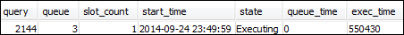
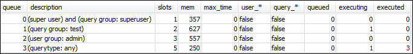
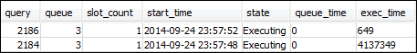
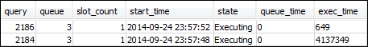
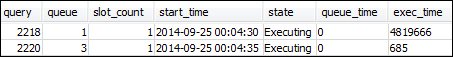
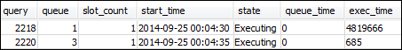

第 3 节：根据用户组和查询组将查询路由到队列
现在，您的集群已与一个新的参数组相关联，并且您已配置 WLM。接下来，运行一些查询，以了解 Amazon Redshift 如何将查询路由到队列进行处理。
步骤 1：在数据库中查看查询队列配置
首先，验证数据库具有您希望的 WLM 配置。
查看查询队列配置
-
打开 RSQL 并运行以下查询。此查询使用您在步骤 1：创建 WLM_QUEUE_STATE_VW 视图中创建的 WLM_QUEUE_STATE_VW 视图。如果您在集群重启之前已将会话连接到数据库，则将需要进行重新连接。
select * from wlm_queue_state_vw;下面是示例结果。

将这些结果您与步骤 1：创建 WLM_QUEUE_STATE_VW 视图中获得的结果进行比较。请注意，现在有另外两个队列。队列 1 现在是面向 test 查询组的队列，而队列 2 则是面向 admin 用户组的队列。
队列 3 现在是默认队列。列表中的最后一个队列始终是默认队列。这是在查询中未指定任何用户组或查询组的情况下默认将查询路由至的队列。
-
运行以下查询以确认您的查询现在在队列 3 中运行。
select * from wlm_query_state_vw;下面是示例结果。

步骤 2：使用查询组队列运行查询
使用查询组队列运行查询
-
运行以下查询以将其路由至
test查询组。set query_group to test; select avg(l.priceperticket*s.qtysold) from listing l, sales s where l.listid <40000; -
在另一个 RSQL 窗口中，运行以下查询。
select * from wlm_query_state_vw;下面是示例结果。

查询已路由至 test 查询组，现在是队列 1。
-
从队列状态视图中选择全部。
select * from wlm_queue_state_vw;您将看到类似以下内容的结果。
 -
现有，重置查询组并再次运行长时间运行的查询：
reset query_group; select avg(l.priceperticket*s.qtysold) from listing l, sales s where l.listid <40000; -
针对视图运行查询以查看结果。
select * from wlm_queue_state_vw; select * from wlm_query_state_vw;以下是示例结果。
 
结果应是查询现在正在队列 3 中再次运行。
步骤 3：创建数据库用户和组
在您可以在此队列中运行任何查询之前，需要在数据库中创建用户组并向该组添加用户。然后，您将使用新用户的凭证通过 RSQL 进行登录，然后运行查询。您需要作为超级用户（如管理员用户）运行查询来创建数据库用户。
创建新的数据库用户和用户组
-
在数据库中，通过在 RSQL 窗口中运行以下命令来创建名为
adminwlm的新数据库用户。create user adminwlm createuser password '123Admin'; -
然后，运行以下命令来创建新用户组并将您的新
adminwlm用户添加到该组。create group admin; alter group admin add user adminwlm;
步骤 4：使用用户组队列运行查询
接下来，您将运行一个查询并将该查询路由至用户组队列。当您想要将查询路由至配置为处理您要运行的查询类型的队列时，可执行此操作。
使用用户组队列运行查询
-
在 RSQL 窗口 2 中，运行以下查询以切换至
adminwlm账户并以该用户的身份运行查询。set session authorization 'adminwlm'; select avg(l.priceperticket*s.qtysold) from listing l, sales s where l.listid <40000; -
在 RSQL 窗口 1 中，运行以下查询以查看查询路由至的查询队列。
select * from wlm_query_state_vw; select * from wlm_queue_state_vw;以下是示例结果。


此查询是在队列 2（
admin用户队列）中运行的。无论何时您以此用户的身份登录来运行查询，这些查询均将在队列 2 中运行，除非您指定要使用另一个查询组。所选队列取决于队列分配规则。有关更多信息，请参阅WLM 队列分配规则。 -
现在，从 RSQL 窗口 2 中运行以下查询。
set query_group to test; select avg(l.priceperticket*s.qtysold) from listing l, sales s where l.listid <40000; -
在 RSQL 窗口 1 中，运行以下查询以查看查询路由至的查询队列。
select * from wlm_queue_state_vw; select * from wlm_query_state_vw;以下是示例结果。
 
 -
当您完成后，请重置查询组。
reset query_group;